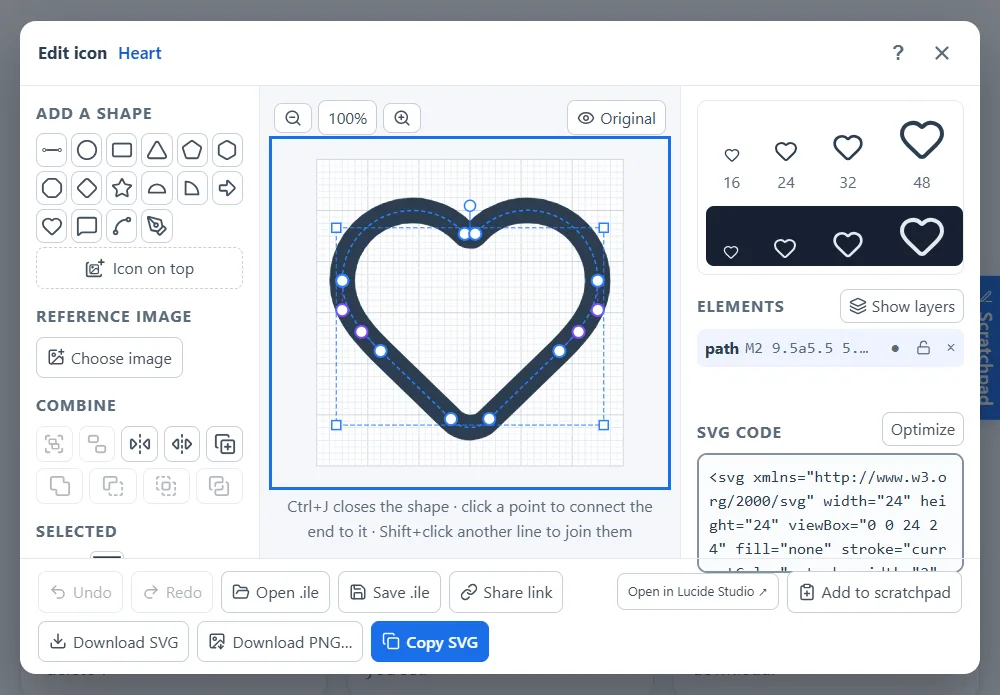
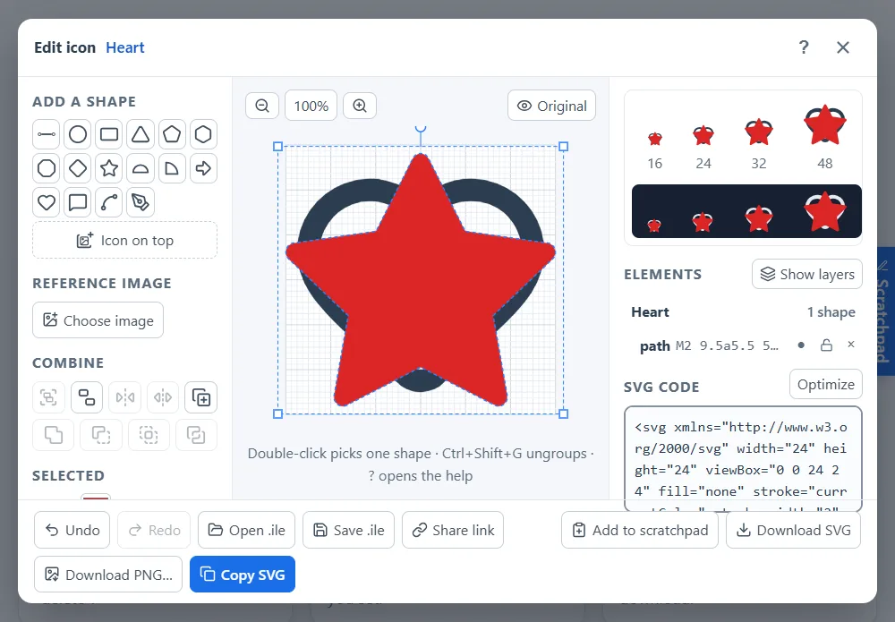

Editor de SVG online para ícones
O editor da Icon Library cria e ajusta ícones SVG direto no navegador. Não pede conta, não instala nada e não envia o seu desenho a servidor nenhum: o trabalho acontece na sua máquina. Ele foi feito para ícones, numa grade de 24 unidades, e não para ilustrações: é isso que o deixa simples.

Para que ele serve
Ajustar um ícone que quase serve
Quase sempre existe um ícone parecido com o que você precisa. Busque na página principal entre os mais de 10 mil do Lucide, do Tabler, do Feather, do Bootstrap Icons e da comunidade, e clique no lápis do cartão. O ícone abre no editor com o tamanho e o traço que você escolheu, e cada forma pode ser movida, curvada, apagada ou recolorida.
Juntar dois ícones num só
Ícone por cima traz um segundo ícone para a mesma grade: uma estrela dentro de um coração, um cadeado num banco de dados, um selo num documento. Cada ícone vira um grupo que se move e se redimensiona inteiro. Com Unir, Subtrair, Interseção e Excluir, duas formas fechadas viram um desenho só, como um recorte.

Desenhar do zero ou a partir de um esboço
No editor em branco, as formas prontas (linha, círculo, retângulo, polígonos, estrela, seta, balão de fala) e a caneta, que faz curvas ao arrastar, dão a base. Para redesenhar um logotipo ou um rascunho, carregue a imagem em Imagem de referência: ela aparece embaixo da grade, só na sua tela, e não entra no SVG.
Consertar um SVG que veio de outro lugar
Cole o código de um SVG no campo de código e ele vira formas editáveis. Isso vale para um ícone que um assistente de IA desenhou, um arquivo de outro designer ou um SVG antigo do seu projeto. O editor descarta scripts e tudo o que um ícone não precisa, e Otimizar tira o que não muda o desenho. Um assistente de IA também pode mandar o ícone como um link que abre direto aqui, como explica o llms.txt.
Como funciona, em quatro passos
- Abra: em branco, pelo botão acima, ou a partir de um ícone da página principal.
- Edite: arraste pontos e formas, que se encaixam na grade e umas nas outras, com guias. Selecione várias para alinhar, agrupar ou girar juntas.
- Confira: as prévias mostram o ícone em 16, 24, 32 e 48 pixels, em fundo claro e escuro. Original mostra como ele era antes.
- Leve: copie o SVG, baixe o arquivo SVG ou um PNG do tamanho que quiser, mande para o rascunho ou salve um arquivo
.ilepara continuar depois.
Por que um editor só para ícones
Ferramentas como Figma, Illustrator e Inkscape fazem muito mais, e para uma
ilustração são a escolha certa. Para um ícone de interface, elas costumam
atrapalhar: exportam o SVG com grupos, transformações e atributos sobrando, e
um ícone de traço perde a cor do texto. Aqui o resultado sai limpo, com
currentColor quando você não escolhe uma cor, então o ícone
herda a cor do texto onde for colado. A grade de 24 unidades, a mesma do
Lucide, do Tabler e do Feather, mantém o traço nítido nos tamanhos pequenos.
| Você quer | No editor |
|---|---|
| Mudar a espessura ou a cor de uma parte | Painel Selecionado, forma por forma |
| Preencher uma forma ou aplicar um degradê | Preencher e Degradê, linear ou radial |
| Recortar uma forma de outra | Subtrair, com as duas formas fechadas selecionadas |
| Deixar uma forma parada enquanto mexe nas outras | O cadeado na lista de elementos |
| Ver a ordem das camadas | Ver camadas, que pinta cada forma de uma cor |
| Editar no celular | O desenho fica no alto e as ferramentas em abas embaixo |
A lista completa de comandos e atalhos está no Guia, na parte do editor.
Perguntas frequentes
É grátis? Preciso de conta?
É grátis e não pede conta. O editor é JavaScript que roda no seu navegador, e a edição em andamento fica guardada nele, para não se perder se a aba fechar.
O meu SVG vai para algum servidor?
Não. O que você cola, desenha ou abre de um arquivo fica no navegador. Num
link de ícone, o desenho vai depois do #, uma parte do endereço
que o navegador não envia. Só sai daqui o que você decidir publicar na
Iconlibrary, o conjunto da comunidade.
Posso usar o ícone num projeto comercial?
Depende de onde ele começou. Um desenho seu é seu. Um ícone editado a partir do Lucide, do Tabler, do Feather ou do Bootstrap Icons continua sob a licença do conjunto de origem (ISC ou MIT), que permite uso comercial; veja as licenças.
Que tipo de SVG ele abre?
Qualquer SVG, mas pensando em ícones. Linhas, círculos, elipses, retângulos, polígonos e paths viram formas editáveis, com traço, preenchimento e degradês. Texto, máscaras e outros elementos de SVG continuam no desenho como estão e só mudam pelo código. Imagens embutidas, filtros e scripts são descartados.
Funciona no celular?
Funciona. No celular o desenho fica à vista e as ferramentas ficam em abas embaixo dele; uma forma é selecionada com um toque e arrastada depois.